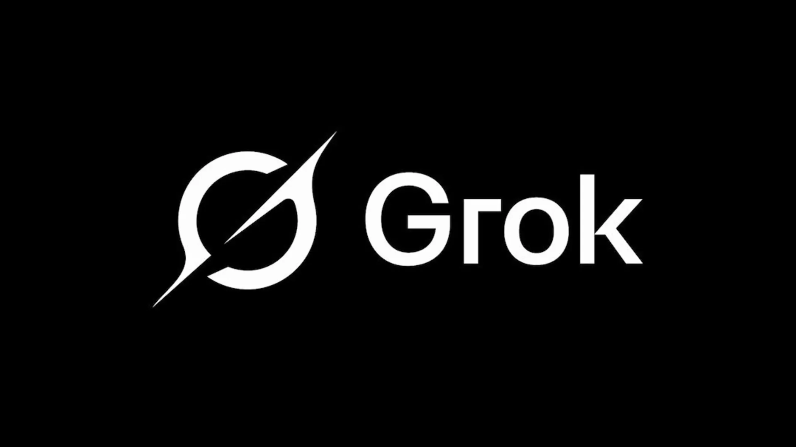

Grok es una inteligencia artificial desarrollada por xAI. Está orientada a la conversación, creatividad, búsqueda de información y respuestas con un estilo dinámico.
Ir a Grok OficialDesarrollador
Conversación
Búsqueda y creatividad

Permite dialogar, responder preguntas y explicar temas de forma natural.
Ayuda a generar ideas, textos, soluciones y contenido original.
Apoya en la consulta de datos y organización de respuestas.
Busca entregar respuestas ágiles para tareas y consultas cotidianas.